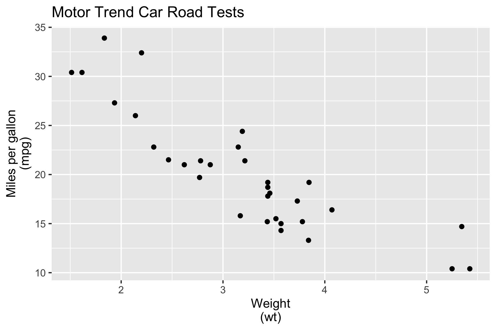

ETC5523: Communicating with Data
Statistical model outputs
Lecturer: Michael Lydeamore
Department of Econometrics and Business Statistics
Aim
- Extract information from model objects
- Understand and create functions in R
- Understand and apply S3 object-oriented programming in R
Why
- Working with model objects is necessary for you to get the information you need for communication
- These concepts will be helpful later when we start developing R-packages
📈 Statistical models
- All models are approximations of the unknown data generating process
- How good of an approximation depends on the collected data and the model choice
🎯 Characterise mpg in terms of wt.
- We fit the model:
Parameter details
- \(\texttt{mpg}_i\) is the miles per gallon of the \(i\)-th car,
- \(\texttt{wt}_i\) is the weight of the \(i\)-th car,
- \(\beta_0\) is the intercept,
- \(\beta_1\) is the slope, and
- \(e_i\) is random error, usually assumed \(e_i \sim NID(0, \sigma^2)\)
Fitting linear models in R
\[\texttt{mpg}_i = \beta_0 + \beta_1\texttt{wt}_i + e_i\]
ℹ️ Extracting information from the fitted model
- When you fit a model, there would be a number of information you will be interested in extracting from the fit including:
- the model parameter estimates,
- model-related summary statistics, e.g. \(R^2\), AIC and BIC,
- model-related values, e.g. residuals, fitted values and predictions.
- So how do you extract these values from the
fit? - What does
fiteven contain?
ℹ️ Extracting information from the fitted model
List of 12
$ coefficients : Named num [1:2] 37.29 -5.34
..- attr(*, "names")= chr [1:2] "(Intercept)" "wt"
$ residuals : Named num [1:32] -2.28 -0.92 -2.09 1.3 -0.2 ...
..- attr(*, "names")= chr [1:32] "Mazda RX4" "Mazda RX4 Wag" "Datsun 710" "Hornet 4 Drive" ...
$ effects : Named num [1:32] -113.65 -29.116 -1.661 1.631 0.111 ...
..- attr(*, "names")= chr [1:32] "(Intercept)" "wt" "" "" ...
$ rank : int 2
$ fitted.values: Named num [1:32] 23.3 21.9 24.9 20.1 18.9 ...
..- attr(*, "names")= chr [1:32] "Mazda RX4" "Mazda RX4 Wag" "Datsun 710" "Hornet 4 Drive" ...
$ assign : int [1:2] 0 1
$ qr :List of 5
..$ qr : num [1:32, 1:2] -5.657 0.177 0.177 0.177 0.177 ...
.. ..- attr(*, "dimnames")=List of 2
.. .. ..$ : chr [1:32] "Mazda RX4" "Mazda RX4 Wag" "Datsun 710" "Hornet 4 Drive" ...
.. .. ..$ : chr [1:2] "(Intercept)" "wt"
.. ..- attr(*, "assign")= int [1:2] 0 1
..$ qraux: num [1:2] 1.18 1.05
..$ pivot: int [1:2] 1 2
..$ tol : num 1e-07
..$ rank : int 2
..- attr(*, "class")= chr "qr"
$ df.residual : int 30
$ xlevels : Named list()
$ call : language lm(formula = mpg ~ 1 + wt, data = mtcars)
$ terms :Classes 'terms', 'formula' language mpg ~ 1 + wt
.. ..- attr(*, "variables")= language list(mpg, wt)
.. ..- attr(*, "factors")= int [1:2, 1] 0 1
.. .. ..- attr(*, "dimnames")=List of 2
.. .. .. ..$ : chr [1:2] "mpg" "wt"
.. .. .. ..$ : chr "wt"
.. ..- attr(*, "term.labels")= chr "wt"
.. ..- attr(*, "order")= int 1
.. ..- attr(*, "intercept")= int 1
.. ..- attr(*, "response")= int 1
.. ..- attr(*, ".Environment")=<environment: R_GlobalEnv>
.. ..- attr(*, "predvars")= language list(mpg, wt)
.. ..- attr(*, "dataClasses")= Named chr [1:2] "numeric" "numeric"
.. .. ..- attr(*, "names")= chr [1:2] "mpg" "wt"
$ model :'data.frame': 32 obs. of 2 variables:
..$ mpg: num [1:32] 21 21 22.8 21.4 18.7 18.1 14.3 24.4 22.8 19.2 ...
..$ wt : num [1:32] 2.62 2.88 2.32 3.21 3.44 ...
..- attr(*, "terms")=Classes 'terms', 'formula' language mpg ~ 1 + wt
.. .. ..- attr(*, "variables")= language list(mpg, wt)
.. .. ..- attr(*, "factors")= int [1:2, 1] 0 1
.. .. .. ..- attr(*, "dimnames")=List of 2
.. .. .. .. ..$ : chr [1:2] "mpg" "wt"
.. .. .. .. ..$ : chr "wt"
.. .. ..- attr(*, "term.labels")= chr "wt"
.. .. ..- attr(*, "order")= int 1
.. .. ..- attr(*, "intercept")= int 1
.. .. ..- attr(*, "response")= int 1
.. .. ..- attr(*, ".Environment")=<environment: R_GlobalEnv>
.. .. ..- attr(*, "predvars")= language list(mpg, wt)
.. .. ..- attr(*, "dataClasses")= Named chr [1:2] "numeric" "numeric"
.. .. .. ..- attr(*, "names")= chr [1:2] "mpg" "wt"
- attr(*, "class")= chr "lm"ℹ️ Extracting information from the fitted model
Accessing model parameter estimates:
(Intercept) wt
37.285126 -5.344472 (Intercept) wt
37.285126 -5.344472 This gives us the estimates of \(\beta_0\) and \(\beta_1\).
But what about \(\sigma^2\)? Recall \(e_i \sim NID(0, \sigma^2)\).
ℹ️ Extracting information from the fitted model
You can also get a summary of the model object:
Call:
lm(formula = mpg ~ 1 + wt, data = mtcars)
Residuals:
Min 1Q Median 3Q Max
-4.5432 -2.3647 -0.1252 1.4096 6.8727
Coefficients:
Estimate Std. Error t value Pr(>|t|)
(Intercept) 37.2851 1.8776 19.858 < 2e-16 ***
wt -5.3445 0.5591 -9.559 1.29e-10 ***
---
Signif. codes: 0 '***' 0.001 '**' 0.01 '*' 0.05 '.' 0.1 ' ' 1
Residual standard error: 3.046 on 30 degrees of freedom
Multiple R-squared: 0.7528, Adjusted R-squared: 0.7446
F-statistic: 91.38 on 1 and 30 DF, p-value: 1.294e-10So how do I extract these summary values out?
Model objects to tidy data
# A tibble: 2 × 5
term estimate std.error statistic p.value
<chr> <dbl> <dbl> <dbl> <dbl>
1 (Intercept) 37.3 1.88 19.9 8.24e-19
2 wt -5.34 0.559 -9.56 1.29e-10# A tibble: 32 × 9
.rownames mpg wt .fitted .resid .hat .sigma .cooksd .std.resid
<chr> <dbl> <dbl> <dbl> <dbl> <dbl> <dbl> <dbl> <dbl>
1 Mazda RX4 21 2.62 23.3 -2.28 0.0433 3.07 1.33e-2 -0.766
2 Mazda RX4 Wag 21 2.88 21.9 -0.920 0.0352 3.09 1.72e-3 -0.307
3 Datsun 710 22.8 2.32 24.9 -2.09 0.0584 3.07 1.54e-2 -0.706
4 Hornet 4 Drive 21.4 3.22 20.1 1.30 0.0313 3.09 3.02e-3 0.433
5 Hornet Sportabout 18.7 3.44 18.9 -0.200 0.0329 3.10 7.60e-5 -0.0668
6 Valiant 18.1 3.46 18.8 -0.693 0.0332 3.10 9.21e-4 -0.231
7 Duster 360 14.3 3.57 18.2 -3.91 0.0354 3.01 3.13e-2 -1.31
8 Merc 240D 24.4 3.19 20.2 4.16 0.0313 3.00 3.11e-2 1.39
9 Merc 230 22.8 3.15 20.5 2.35 0.0314 3.07 9.96e-3 0.784
10 Merc 280 19.2 3.44 18.9 0.300 0.0329 3.10 1.71e-4 0.100
# ℹ 22 more rowsBut how do these functions work?
Functions in
Revise about functions at Learn R
Functions in R
Functions can be broken into three components:
formals(), the list of arguments,body(), the code inside the function, andenvironment()1.
Functions in R are created using
function()with binding to a name using<-or=
Functions in R
Function Example 1
[1] 1.5Function Example 2
[1] 1.5[1] 1.5Error in Summary.Date(structure(c(18843, 18850), class = "Date"), na.rm = TRUE): sum not defined for "Date" objectsFunction Example 3
[1] 1.5[1] 1.5[1] "2021-08-07"S3 Object oriented programming (OOP)
- The S3 system is the most widely used OOP system in R but there are other OOP systems in R, e.g. the S4 system is used for model objects in
lme4R-package, but it will be out of scope for this unit
S3 Object oriented programming (OOP)
- Here I create a generic called
f4:
- And an associated default method:
S3 Object oriented programming (OOP)
S3 Object oriented programming (OOP)
- A method is created by using the form
generic.class. - When using a method for
class, you can omit the.classfrom the function. - E.g.
f4(x4)is the same asf4.POSIXct(x4)since the class ofx4isPOSIXct(andPOSIXt). - But notice
f4.numericdoesn’t exist, instead there isf4.default. defaultis a special class and when a generic doesn’t have a method for the corresponding class, it falls back togeneric.default
Working with model objects
in
Modelling in R
- There are many R-packages that fit all kinds of models, e.g.
mgcvfits generalized additive models,rstanarmfits Bayesian regression models using Stan, andfablefits forecast models,- many other contributions by the community.
- There are a lot of new R-packages contributed — some implementing the latest research results.
- This means that if you want to use the state-of-the-art research, then you need to work with model objects beyond the standard
lmandglm.
Example with Bayesian regression
SAMPLING FOR MODEL 'lm' NOW (CHAIN 1).
Chain 1:
Chain 1: Gradient evaluation took 0.000583 seconds
Chain 1: 1000 transitions using 10 leapfrog steps per transition would take 5.83 seconds.
Chain 1: Adjust your expectations accordingly!
Chain 1:
Chain 1:
Chain 1: Iteration: 1 / 2000 [ 0%] (Warmup)
Chain 1: Iteration: 200 / 2000 [ 10%] (Warmup)
Chain 1: Iteration: 400 / 2000 [ 20%] (Warmup)
Chain 1: Iteration: 600 / 2000 [ 30%] (Warmup)
Chain 1: Iteration: 800 / 2000 [ 40%] (Warmup)
Chain 1: Iteration: 1000 / 2000 [ 50%] (Warmup)
Chain 1: Iteration: 1001 / 2000 [ 50%] (Sampling)
Chain 1: Iteration: 1200 / 2000 [ 60%] (Sampling)
Chain 1: Iteration: 1400 / 2000 [ 70%] (Sampling)
Chain 1: Iteration: 1600 / 2000 [ 80%] (Sampling)
Chain 1: Iteration: 1800 / 2000 [ 90%] (Sampling)
Chain 1: Iteration: 2000 / 2000 [100%] (Sampling)
Chain 1:
Chain 1: Elapsed Time: 0.101 seconds (Warm-up)
Chain 1: 0.204 seconds (Sampling)
Chain 1: 0.305 seconds (Total)
Chain 1:
SAMPLING FOR MODEL 'lm' NOW (CHAIN 2).
Chain 2:
Chain 2: Gradient evaluation took 3e-06 seconds
Chain 2: 1000 transitions using 10 leapfrog steps per transition would take 0.03 seconds.
Chain 2: Adjust your expectations accordingly!
Chain 2:
Chain 2:
Chain 2: Iteration: 1 / 2000 [ 0%] (Warmup)
Chain 2: Iteration: 200 / 2000 [ 10%] (Warmup)
Chain 2: Iteration: 400 / 2000 [ 20%] (Warmup)
Chain 2: Iteration: 600 / 2000 [ 30%] (Warmup)
Chain 2: Iteration: 800 / 2000 [ 40%] (Warmup)
Chain 2: Iteration: 1000 / 2000 [ 50%] (Warmup)
Chain 2: Iteration: 1001 / 2000 [ 50%] (Sampling)
Chain 2: Iteration: 1200 / 2000 [ 60%] (Sampling)
Chain 2: Iteration: 1400 / 2000 [ 70%] (Sampling)
Chain 2: Iteration: 1600 / 2000 [ 80%] (Sampling)
Chain 2: Iteration: 1800 / 2000 [ 90%] (Sampling)
Chain 2: Iteration: 2000 / 2000 [100%] (Sampling)
Chain 2:
Chain 2: Elapsed Time: 0.102 seconds (Warm-up)
Chain 2: 0.046 seconds (Sampling)
Chain 2: 0.148 seconds (Total)
Chain 2:
SAMPLING FOR MODEL 'lm' NOW (CHAIN 3).
Chain 3:
Chain 3: Gradient evaluation took 2e-06 seconds
Chain 3: 1000 transitions using 10 leapfrog steps per transition would take 0.02 seconds.
Chain 3: Adjust your expectations accordingly!
Chain 3:
Chain 3:
Chain 3: Iteration: 1 / 2000 [ 0%] (Warmup)
Chain 3: Iteration: 200 / 2000 [ 10%] (Warmup)
Chain 3: Iteration: 400 / 2000 [ 20%] (Warmup)
Chain 3: Iteration: 600 / 2000 [ 30%] (Warmup)
Chain 3: Iteration: 800 / 2000 [ 40%] (Warmup)
Chain 3: Iteration: 1000 / 2000 [ 50%] (Warmup)
Chain 3: Iteration: 1001 / 2000 [ 50%] (Sampling)
Chain 3: Iteration: 1200 / 2000 [ 60%] (Sampling)
Chain 3: Iteration: 1400 / 2000 [ 70%] (Sampling)
Chain 3: Iteration: 1600 / 2000 [ 80%] (Sampling)
Chain 3: Iteration: 1800 / 2000 [ 90%] (Sampling)
Chain 3: Iteration: 2000 / 2000 [100%] (Sampling)
Chain 3:
Chain 3: Elapsed Time: 0.088 seconds (Warm-up)
Chain 3: 0.098 seconds (Sampling)
Chain 3: 0.186 seconds (Total)
Chain 3:
SAMPLING FOR MODEL 'lm' NOW (CHAIN 4).
Chain 4:
Chain 4: Gradient evaluation took 5e-06 seconds
Chain 4: 1000 transitions using 10 leapfrog steps per transition would take 0.05 seconds.
Chain 4: Adjust your expectations accordingly!
Chain 4:
Chain 4:
Chain 4: Iteration: 1 / 2000 [ 0%] (Warmup)
Chain 4: Iteration: 200 / 2000 [ 10%] (Warmup)
Chain 4: Iteration: 400 / 2000 [ 20%] (Warmup)
Chain 4: Iteration: 600 / 2000 [ 30%] (Warmup)
Chain 4: Iteration: 800 / 2000 [ 40%] (Warmup)
Chain 4: Iteration: 1000 / 2000 [ 50%] (Warmup)
Chain 4: Iteration: 1001 / 2000 [ 50%] (Sampling)
Chain 4: Iteration: 1200 / 2000 [ 60%] (Sampling)
Chain 4: Iteration: 1400 / 2000 [ 70%] (Sampling)
Chain 4: Iteration: 1600 / 2000 [ 80%] (Sampling)
Chain 4: Iteration: 1800 / 2000 [ 90%] (Sampling)
Chain 4: Iteration: 2000 / 2000 [100%] (Sampling)
Chain 4:
Chain 4: Elapsed Time: 0.099 seconds (Warm-up)
Chain 4: 0.144 seconds (Sampling)
Chain 4: 0.243 seconds (Total)
Chain 4: Huh?
S3 Object classes
- So how do you find out the functions that work with model objects?
- The methods associated with this can be found using:
[1] add1 alias anova case.names coerce
[6] confint cooks.distance deviance dfbeta dfbetas
[11] drop1 dummy.coef effects extractAIC family
[16] formula fortify hatvalues influence initialize
[21] kappa labels logLik model.frame model.matrix
[26] nobs plot predict print proj
[31] qqnorm qr residuals rstandard rstudent
[36] show simulate slotsFromS3 summary variable.names
[41] vcov
see '?methods' for accessing help and source codeWhere is coef()?
Case study broom::tidy
Case study broom::tidy
# A tibble: 2 × 3
term estimate std.error
<chr> <dbl> <dbl>
1 (Intercept) 30.4 1.32
2 wt -3.19 0.339Working with model objects
- Is this only for R though?
- How do you work with model objects in general?
Python
[37.28512616734204, array([-5.34447157])]
(Intercept) wt
37.285126 -5.344472 Week 5A Lesson
Summary
- Model objects are usually a
listreturning multiple output from the model fit - When working with model objects, check the object structure and find the methods associated with it (and of course check the documentation)
- You should be able to work (or at least know how to get started) with all sort of model objects
- We revised how to create functions in R
- We applied S3 object-oriented programming in R

ETC5523 Week 5A